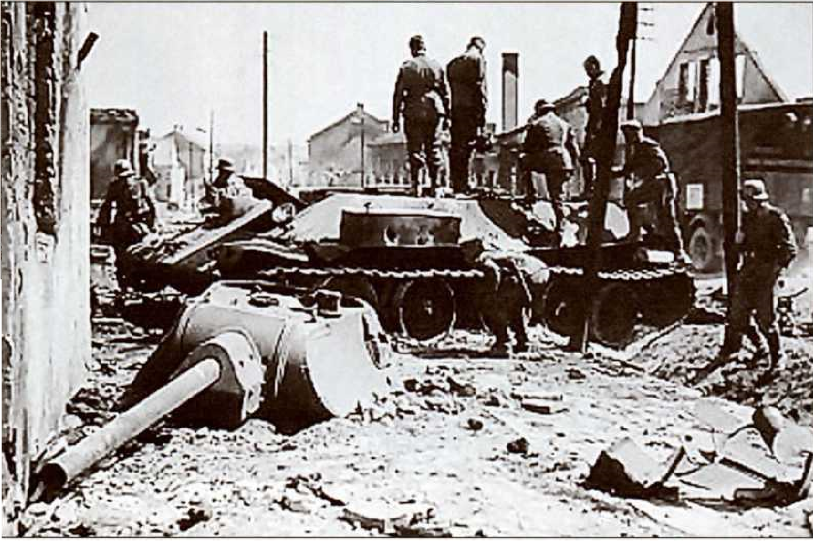
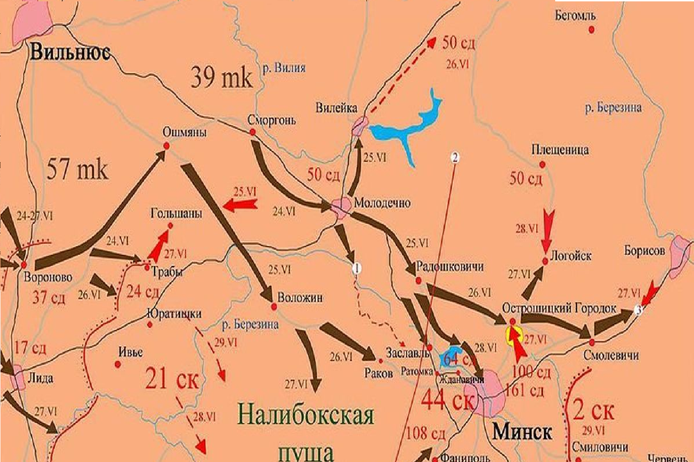

1941
|  |
ПодробннеС самого начала операции "Барбаросса" (22 июня 1941 года) Белостокский выступ, территория на востоке Польши, занятая советскими войсками, оказался в центре немецкого внимания. Этот выступ, напоминающий по форме бутылку с горлышком, ориентированным на восток, представлял собой идеальную цель для немецкой стратегии "блицкрига". С одной стороны, выступ позволял немцам прорваться вглубь советской территории, с другой – его узкое "горлышко" создавало предпосылки для окружения советских войск. |
|
Немецкое наступление на Белостокский выступ велось с трех направлений:
• Север: 3-я танковая группа (генерал-полковник Гот) нанесла удар в Литве, с целью разгромить советские войска и выйти в тыл Западному фронту. Советские войска, застигнутые врасплох, сразу оказались в тяжелом положении. Подробнне• 11-й механизированный корпус 3-й армии попытался контратаковать под Гродно, даже сумев выйти к его пригороду, но был отбит. Однако, несмотря на тяжелейшие потери, советские войска оказали ожесточенное сопротивление. Подробнне• 24 июня был организован контрудар под Гродно силами конно-механизированной группы (КМГ) под командованием генерал-лейтенанта И. В. Болдина. |
 |
 |
Несмотря на это, немецким войскам удалось остановить контрудар КМГ Болдина, причиной чего стали: Подробнне• Авиационное превосходство немцев: Немецкая авиация господствовала в воздухе, уничтожая советские танки и транспорт. Бои на Белостокском выступе стали жестким уроком для Красной Армии. Немецкие войска, обладая высокой мобильностью, продемонстрировали свою способность к быстрому наступлению и окружению. Красная Армия же по многим причинам не смогла организовать эффективную оборону. Бои на Белостокском выступе стали трагическим началом Великой Отечественной войны, но они также показали несокрушимый дух советских солдат, их готовность сражаться за свою Родину до последнего. |